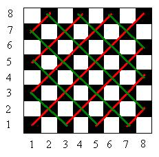

10800 - Not That Kind of Graph
This is a string processing problem, just follow the problem description. To help you determine whether you already get a correct implementation or not, let me give you several examples (see the highlighted text to view the whitespaces):
Input:
4
RCRFCRFFCCRRC
FFFCCC
RFCRFC
CCCRRF
Output:
Case #1:
| _
| _/\_/\ /
| / \__/
+---------------
Case #2:
| \
| \
| \___
+--------
Case #3:
| /\_/\_
+--------
Case #4:
| /\
| ___/
+--------
10801 -
Lift Hopping
This problem, although is a bit weird for real-life situation, can be transformed into graph problem. Give edges between floors that can be served within one lift, the weight of this edges is the gap between floors * time required by this lift to move one floor. Also, add another edges that connects two lifts if they stop at the same floor, give weight 60. The solution is the shortest path from floor 0 to floor k by traversing this graph. Please use Dijkstra algorithm.
A simple all-pairs shortest path problem. Firstly, build a distance matrix (use floating point). Set the distance to a very big number (say, 1 million) if it is bigger than 10 km. Then, perform floyd warshall algorithm to obtain the shortest path from any pair of towns. Then, pick the longest path among these shortest path distances, this will be your answer... if the answer is greater than 1 million, then output "Send Kurdy" since there exist a pair of town that are unreachable.
10810 - Ultra-QuickSort
This problem is actually a problem of counting "inversion index" using merge sort. Since merge sort runs in O(n lg n), 500.000 lg2 500.000 ~~ 10.000.000 operations... doable... To compute inversion index, merge sort can be slightly modified. When the right partition goes in first in merge step, that means all the remaining items in left partition < first element in right partition (i.e. you have to swap with all of them). Note: since the number of such op swaps can be very large, you must use unsigned long long to store op.
10812 - Beat the Spread!
From the problem description, we know that:
score1 + score2 = s, and
score1 - score2 = d (assuming score1 >= score2).
Therefore:
score1 = (s+d)/2
score2 = s-score1
This formula will only valid if (s+d)%2 == 0 and score1 >= 0 and score2 >= 0.
10813 - Traditional BINGO
This problem is quite straightforward. Just follow the description given in the problem description. For the 'free space' in the center, mark it from the beginning, that's all...
10815 - Andy's First Dictionary
Simple string processing problem. Tokenize each word (word is defined as sequences of a-z/A-Z only!), lowercase them, and then hash them to a good hashtable (in C++, I use STL map). Finally, output the strings in sorted order.
10820 - Send a Table
This is what I can derive
so far:
TotalPrecalculated[1] = 1; // base case
TotalPrecalculated[i] = TotalPrecalculated[i-1] + 2*(number of occurrences
of j, j<=i, and gcd(j,i) == 1)
I think I will going to pre-calculate this values up to 50000, store it in a table, and then send this table to the judge?...
10843 - Anne's game (by: Niaz Morshed Chowdhury)
This problem looks very tough but only to them who don’t know Cayley’s formula. It gives the number of distinct spanning trees in a complete graph on n vertices.
Basic formula : n^(n-2).
But for higher value of n, like n = 100, you can easily understand the situation. It will cause overflow. So, to avoid this problem, we can take the help of Number Theory. From Chinese Remainder rule we know, In case of consecutive multiplying if we MOD a number at each step of multiply by a particular number then the result will be same as the result of doing MOD at the end of the multiplications that particular number.
Example
22 * 1 = 44
44 * 2 = 88
88 * 3 = 264
264 % 10 = 4
But,
22 * 1 = 44 % 10 = 4
4 * 2 = 8 % 10 = 8
8 * 3 = 24 % 10 = 4
So, we can see the result is same in both the cases. In this problem we just need to write a function that will find the power of any number and at each intermediate step it will MOD the result by 2000000011. Then there will be no chance of having Over Flow.
10849 - Move the Bishop (by: Niaz Morshed Chowdhury)
For this problem we can say that a bishop needs to move at best twice to go from any square to another one. WHY? Very simple! Look at the chess board. You can understand it.

So, the possible results will be:
0 – if the source and destination is same.
1 – if the source and destination situated on the same line. (In the picture for
black we have shown the lines by red and green colors.)
2 – if the source and destination situated on the same color but different
line.
no move – if source and destination situated on different color.
We will be given N (matrix size) and x1,y1 (source), x2,y2 (destination)
Use if else just following this order!
Case # 1 : Out of the board
If any one of x1,y1,x2,y2 is greater than N then
“no move”
Explanation: As the board size is N, no value can not be greater than it.
Case # 2 : Source and Destination is same
If x1=x2 and y1=y2, then “0”
Explanation: As source and destination are same.
Case # 3 : On the same line (Red lines in the picture)
if abs(x1-x2) = abs(y1-y2), then “1”.
Explanation: Look at the picture along red lines. 1,3 – 2,4 – 3,5 – 4,6 etc.
At each square index is increasing by 1 in both x and y axis. So, if the
difference of x and y of source and destination is same then they will be on
the same line.
Case # 4 : On the Same line (Green Lines in the picture)
if x1+y1 = x2+y2 , then “1”.
Explanation: Look at the picture along green line. 1,7 – 2,6 – 3,5 – 4,4 etc.
At each square index is decreasing by 1 in y axis and increasing by 1 in x axis.
As a result, sum is always same. So, if the sum of [x,y](source) and sum of [x,y](destination)
is same then they will be on the same line.
Case # 5 : On the same color (For white)
if x is odd and y is even or if x is even or y is
odd then this square is white.
Now, if source and destination is white and case 1 to 4 fails, then answer is
“2”
Explanation: This is just my observation. Look at the picture. You can also
understand it.
Case # 6 : On the same color (For Black)
if x and y both are even or if x and y both are
odd then this square is Black.
Now, if source and destination is Black and case 1 to 4 fails, then answer is
“2”
Explanation: This is just my observation. Look at the picture. You can also
understand it.
Case # 7 : Un reachable
If case 1 to 6 fails then unreachable. So, the answer is “no move”.
10851 - 2D Hieroglyphs decoder
Just make use of the fact that any positive integer can be written in the form a0 * 2 ^ 0 + a1 * 2 ^ 1 + ... + an * 2 ^ n, where ai = 0 or 1. So if b(i, c) == '\', it means in the binary representation of c, ai-1 = 1.
10852 - Less Prime (by: Niaz Morshed Chowdhury)
This is actually an easy prime problem. Problem wants, “Let n be an integer, 100 ≤ n ≤ 10000, find the prime number x, x ≤ n, so that n-p*x is maximum, where p is an integer such that p*x ≤ n < (p+1)*x.” If we simplifies this statement then we can locate the position of the desired prime number! If n is the input then our desired prime number will be just the prime number after/from this number “k = n/2 + 1”. Now, generate the prime numbers and check according to this statement and you will easily get it accepted.
Example:
n = 101
k = n/2 + 1 = 50 + 1 = 51.
So the next prime number from this number is 53.
Alternative: A mathematics problem. Deduce that p
= 1. The problem is to find the first prime number that is >= n / 2 + 1. Do so
using the
sieving technique.
Write a recursive-descent parser like method to
parse the input and count the number of paths.
10855 - Rotated Square
Simple ad-hoc problem. Use the formula (i, j) => (j, n - 1 - i) to rotate the small square 90 degrees to the right.
Pre-calculate the number of prime factors of n!
for n = 0...2800000 and store in array a. Then do a binary search on array a for
each input.
10858 - Unique Factorization
Use a recursive function Factorize(stack s, int N)
to print (and count) all the ways N can be uniquely factorized.
10862 - Connect the Cable Wires
The number of ways to connect for n houses can be calculated using the formula: f(n) = 3 * f(n-1) - f(n-2). f(1) = 1, f(2) = 3. Use Java's BigInteger class.
10865 - Brownie Points I (by: Niaz Morshed Chowdhury)
This is actually a checking problem. At first we need to find the dividing line region. Then will start to check for each point based on some criteria for Stan and Olie. Here goes the algorithm.
k=N/2+1; // mid point that is actually the
dividing line region.
x=a[k]; // a[] holds the X co-ordinate value and x is the X of the mid point.
y=b[k]; // b[] holds the Y co-ordinate value and y is the Y of the mid point.
stan=0; // Initially both of them have 0 score.
olie=0;
for (i=1; i<=N; i++) {
if ((a[i]>x && b[i]>y)||(a[i]<x && b[i]<y)) // Criteria for Stan
stan++;
if ((a[i]>x && b[i]<y)||(a[i]<x && b[i]>y)) // Criteria for Olie
olie++;
}
Just print the value of stan and olie.
Alternative: An ad-hoc problem. Simply follow the rules to calculate each person's points.
A mathematics problem. Use the sieve method to pre-calculate all the prime numbers up to 1000000. Then try all the possible lengths of subsequence, starting from the smallest (2) to the largest(n).
A DP problem. Number the end points of the segments from left to right, top to bottom: 0, 1, 2... Let Best(pi) be the shortest path from point pi to point (n, n). If pi is the left end of a segment, the next point to go on the next line can be pi + 2 or pi + 3. If pi is the right end of a segment, the next point to go on the next line can be pi + 1 or pi + 2. Choose the shortest path among the two ways.
10878 - Decode the tape (by: Niaz Morshed Chowdhury)
Very easy problem. To solve this problem at first
you need to decode what the problem actually wants. In the problem description
you can not find any type of hint of actually what you need to do! The only
clue is the sample input and which is really sufficient. Look at the sample input. You will get something
like this one:
___________
| o . o|
| o . |
| ooo . o|
| ooo .o o|
___________
Just ignore the first and the last line. Consider from second to second last line and also ignore there the first (from left), 7th and 11th character. From rest of the character consider ‘space’ as ZERO and ‘o’ as ONE. Now convert this binary number to decimal and output the corresponding character. Example:
| o . o|
x01000x001 => 01000001(b) => 65(d) => A.
Alternative: An ad-hoc problem. If we ignore the '|' and '.' character, strings of the form " oo o " represent the binary form of ASCII codes ('o' = 1, ' ' = 0). Simply convert the strings to ASCII codes and output the corresponding characters.
10879 - Code Refactoring (by: Niaz Morshed Chowdhury)
Trust me! Just find arbitrarily any two numbers that forms the given number. Here you need to find two such pair. Its a special judge problem and there is nothing called special or critical test case.
My Process:
1. Start from 2 to find two divisor of the given number.
2. Now, divide the given number with these two numbers and get another two!
3. Just print them according to the given format and get it accepted.
Alternative: A mathematics problem. Factor K into a * b * c (a and b are prime, a < b), then output K = a * (b * c) = (a * b) * c. Observe that b < 3163 ( = sqrt(10000000)), a sieve can be used to find a and b.
A mathematics problem. List all the factors of C -
R that are > R. To do so, loop i from 1 to sqrt(C - R); if (C - R) divides i and
i > R then output i, and save (C - R) / i to output later.
10891 - Game of Sum
This problem can be solved using dynamic programming. Let best(i, j) be the best difference the current player can get, given the starting position (i) and the ending position (j). Let sum(i, j) be the sum a[i]+...+a[j]. The dynamic programming formula is best(i, j) = max(max(sum(i,i+k)-best(i+k,j),sum(j-k,j)-best(i,j-k))) for k = 0,...,j-i.
A mathematics problem. Find all the divisors of n, then find the number of pairs of divisors (m, n) such that gcd(m, n) = 1.
Store the characters as 5x5 arrays. Just draw each
'pixel' N times, and each line N times. Also remember to output 2 blank lines
after each test.
10895 - Matrix Transpose
Store the matrix as a vector of vector of pair of int. The first element of the pair is the column index, the second is the number. Create a new vector of vector which is the transpose of the original.
10896 - Known Plaintext Attack
An ad-hoc problem. Try all the possible keys. Use strtok to tokenize the original string and compare each of the token with the known word.
Simple geometry problem. Convert latitudes and
longitudes to Cartesian coordinates and calculate the angle the two points make
with the center of the Earth. Multiplying that angle by the radius of the Earth
gives the answer.
10898 - Combo Deal
A DP problem. Let Best(s1, s2, s3, s4, s5, s6) be the best price to buy the set (s1, s2, s3, s4, s5, s6). The DP formula is Best(s1, s2, s3, s4, s5, s6) = (for all i) Best(s1 - ci1, s2 - ci2, s3 - ci3, s4 - ci4, s5 - ci5, s6 - ci6) + pi, where pi is the price of combo set i, and cij is the number of item j in combo set i.